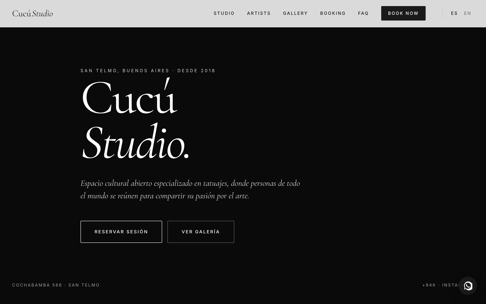

Cucú Studio
Visit live site
El proyecto
Cucú Studio es un estudio creativo de Córdoba especializado en tattoo y diseño gráfico. Operaban sin presencia web — toda su captación pasaba por Instagram, lo que limitaba el alcance y la profesionalidad percibida.
El encargo fue construir un sitio que igualara el nivel visual de su trabajo: editorial, audaz y rápido. Sin WordPress, sin templates. Todo desde cero.
El problema
Instagram como único canal de contacto generaba fricción para los clientes: no había precios claros, proceso de reserva definido ni forma de ver el portafolio completo de los artistas. El estudio perdía clientes potenciales que preferían estudios con sitio web.
La solución
Un sitio editorial de una sola página con navegación suave, tipografía grande y espacio blanco intencional. Portfolio de trabajos con galería lazy-loaded, sección de artistas, proceso de reserva y contacto directo. Deploy en Netlify con dominio custom.
Decisiones técnicas
HTML semántico
Estructura con <article>, <figure> y <section> correctas. Schema.org para LocalBusiness y ArtGallery. Heading hierarchy estricta.
CSS Grid editorial
Layout con grid-template-areas asimétrico. Tipografía con clamp() para escala fluida entre 320px y 1920px. Variables custom properties para el sistema de color del estudio.
Scroll animations
IntersectionObserver con threshold escalonado para reveals por línea. Sin librerías externas. prefers-reduced-motion respetado en todas las animaciones.
Imágenes optimizadas
Todas las imágenes en WebP con fallback JPEG. loading="lazy" en portfolio, loading="eager" en hero. width/height explícitos en cada <img> para CLS = 0.
Deploy & CI
Auto-deploy desde rama main en Netlify. Headers de seguridad en netlify.toml: CSP, X-Frame-Options, Referrer-Policy. Compresión Brotli automática.
Accesibilidad
Contraste WCAG AA en todos los elementos. Navegación 100% por teclado. aria-label en botones icon-only. alt descriptivo en todas las imágenes del portfolio.